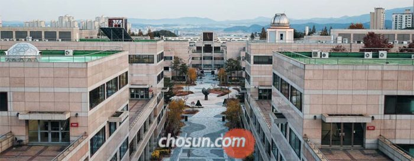
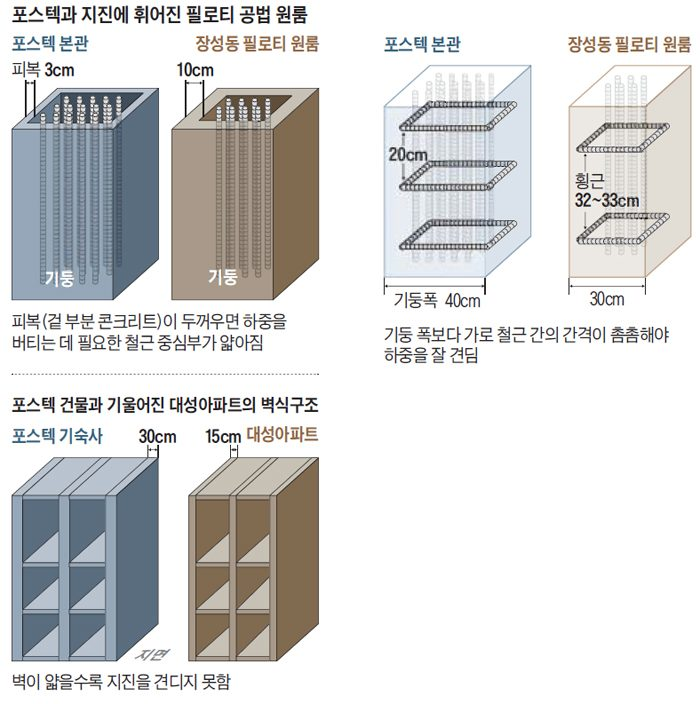
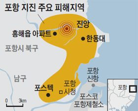
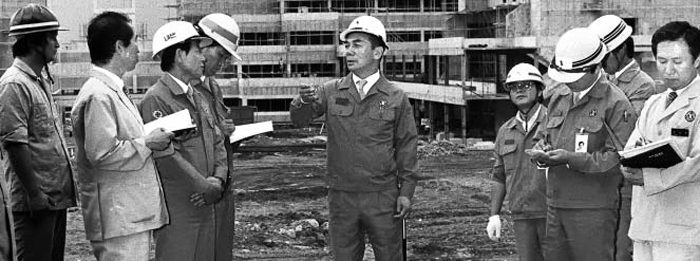

매체 조선일보보도일 2017-11-18
[31년 됐는데 지진 피해 없어… 이 건물이 던지는 메시지]
"원칙에 철저했던 학교 건물, 컵 하나 안 떨어질 정도"
박태준 前회장, 1985년 "강진 견디는 1000년 갈 학교 짓자"
내진 설계 기준 없던 시절, 건축 표준 지키며 원칙대로 공사
- 박태준 "수백년 한번 올 지진도 대비"
주변선 "호들갑 떤다" 했지만 매일 공사현장 찾아 진두지휘
97년에 지은 교내 건물보다 튼튼
- 15㎝ 차이가 가른 건물의 운명
31년전 지은 포스텍 기숙사, 외벽 두께 30㎝ 튼튼하게 지어
포항 지진에 갈라지고 기울어진 대성아파트 외벽은 15㎝ 불과
지난 15일 발생한 포항 강진으로 다세대 주택 기둥이 엿가락처럼 휘고, 아파트가 '피사의 사탑'처럼 한쪽으로 기울었다. 잇따른 강진의 피해를 줄이기 위해선 내진(耐震) 설계를 강화해야 한다는 지적이 나온다. 하지만 31년 전 내진 설계를 하지 않고도 이번 지진을 견딘 건물이 있다. 포항시 남구 지곡동의 포스텍(포항공과대학교)이다. 1986년 완공한 포스텍 건물 35개 동(棟)은 피해를 입지 않았다. 진앙과의 거리(약 11㎞)가 상대적으로 멀었기 때문만이 아니다. 포항시청에 따르면 이번 지진으로 포스텍이 있는 포항 남구에서만 230여건의 피해 신고가 접수됐다. 포스텍에서 1㎞ 떨어진 대잠동의 27년 된 한 5층 아파트에선 화장실 천장이 무너져내렸다. 포스텍은 작년 9월 발생한 경주 강진 때도 아무런 피해를 보지 않았다. 당시에도 진앙과의 거리는 30㎞ 안팎이었다.
지진 견딘 포스텍 - 1986년에 지어진 포스텍 본관 일대. 포스텍 설립자인 고(故) 박태준 포스코 전 회장은 건설 현장에서 “우리나라에도 언제든 지진이 올 수 있다. 강진에 견디는 천년 갈 학교를 지으라”고 여러 번 강조했다. 국내엔 내진 설계 기준도 없던 때였다. 박 전 회장의 고집 덕분에 당시 지은 35개동은 이번 지진 피해를 전혀 입지 않았다. /남강호 기자
포스텍이 강진에 견딜 수 있었던 것은 캠퍼스 시공을 진두지휘한 박태준 포스코 전 회장의 원칙 시공과 안전한 건물을 짓겠다는 신념 때문이었다. 이번에 일부 천장 내장재가 덜렁거린 피해를 본 포스텍 건물은 오히려 1997년 지은 것이었다. 포스텍 설립 때 건설본부장이었던 이대공(76) 애린복지재단 이사장은 "박 전 회장은 30여년 전 이미 지진에 대비하고 1000년을 견딜 수 있는 건물을 지으라고 했다"고 말했다.
건축 원칙에 충실한 시공
17일 포스텍을 찾아 당시 설계도면을 살펴봤다. 본관 강의동 중 하나인 5층짜리 '무은재기념관' 도면엔 '기둥의 폭은 40㎝로 하고 지름 1㎝짜리 횡근을 30㎝ 간격으로 둘러라'고 적혀 있었다. 이런 기둥 120여개가 건물 하중을 버틴다. 기둥 설계의 기본은 가로로 놓는 철근(횡근)의 간격이 기둥 폭보다 촘촘해야 한다는 것이다. 이 원칙을 분명히 명기하고 지킨 것이다.
이번 지진에 부러진 장성동 필로티(1층을 주차장으로 만들고 2층부터 건물이 올라가는 것) 공법 건물은 기둥의 폭은 30㎝인데 횡근 간격은 이보다 넓은 32~33㎝였다. 원칙을 지키지 않은 것이다.
포스텍 건물의 기둥은 피복(겉 부분 콘크리트) 부분도 건축 표준을 충실히 따르고 있었다. 하중을 지탱하는 기둥(내력벽)은 피복 두께가 3㎝ 이하여야 한다. 철근이 들어가는 중심부가 그만큼 굵어야 한다는 것이다. 무은재기념관 기둥의 피복 두께는 3㎝였다. 장성동 '필로티 건물' 기둥 피복은 10㎝가 넘는 것으로 조사됐다.
포스텍과 지진에 휘어진 필로티 공법 원룸 비교 그래픽
이번 지진으로 건물이 기울어진 흥해읍 대성아파트는 '벽식 구조'로 지어졌다. 기둥이 없는 대신 벽이 건물 무게를 견디는 공법이다. 건물 내부 공간을 넓게 쓸 수 있는 장점이 있지만, 벽이 부실하면 이번처럼 건물이 쉽게 파손된다. 권현우 포스텍 시설운영팀 대리는 "벽식 구조라고 지진에 특별히 약한 게 아니다"며 "벽을 견고하게 지으면 오래된 건물이라도 얼마든지 버틸 수 있다"고 했다. 5층짜리 포스텍 기숙사는 대성아파트보다 1년 먼저 지어졌다. 포스텍 기숙사 외벽 두께는 30㎝, 대성아파트 외벽은 15㎝ 정도였다. 15㎝ 차이가 건물의 운명을 가른 것이다.
김영수 포스텍 시설운영팀장은 "1990년대 자체 조사를 해보니 학교 건물 전체가 규모 6 정도 지진을 버틴다는 결론이 나왔다"고 했다. 포스텍은 지난 9월 1986년 완공한 35개 건물 중 기숙사 생활관, 대학원 아파트, 교수 아파트 등 4개 동(棟)을 뽑아 내진 성능을 진단하고 있다. 김 팀장은 "중간 조사 결과 규모 6 지진은 문제없이 버틸 수 있는 것으로 나왔다"고 했다. 김도연 포스텍 총장은 "박 회장이 가장 싫어한 말이 '잘' '대충'이었다"며 "그만큼 꼼꼼하게 신경 쓴 덕분에 우리가 안전하게 학교에 다닐 수 있는 것"이라고 했다.
"언제든 지진 올 수 있다" 만반의 대비
1985년 박태준 전 회장은 당시 포스코 상무였던 이대공 이사장과 세계 유명 대학을 순방했다. 포스텍의 모델이 될 만한 학교를 찾기 위해서였다. 영국에 들러 옥스퍼드와 케임브리지대학을 둘러본 박 전 회장이 이 이사장에게 말했다. "포항공대는 정말로 오래 남아야 해. 옥스퍼드와 케임브리지 봤지? 학교 역사가 600년이 넘어. 우리 학교는 1000년을 가도록 튼튼하게 짓자고."
그는 지진에도 대비했다. 당시는 우리나라가 '지진 안전지대'로 생각되던 때였다. 박 전 회장은 수시로 "우리나라도 언제든 지진이 날 수 있다. 학교 모든 시설이 수백년에 한 번 오는 강진에도 안전할 수 있도록 지어라"고 강조했다. 일본에서 초·중·고등학교를 나온 박 전 회장은 지진 위험을 누구보다 잘 알고 있었다. 당시 실무진은 '아니 우리나라에 무슨 지진이 온다고 호들갑을 떠시나'라고 생각했다고 한다. 내진 설계에 대한 기준조차 마련돼 있지 않았던 때였다. 이 이사장은 "내진 설계 기준이 없었다. 그냥 설계도면 보고 원칙대로 정직하게 만들었다"고 했다.
1985년 8월 첫 삽을 뜬 뒤 박 전 회장은 거의 매일 현장을 찾았다. 건설 부본부장으로 포항제철과 광양제철 전체 건설 부문을 총괄하는 포스코 본사 본부장을 앉혔다. 주변에선 "조그마한 대학 짓는데 본사 총괄을 쓰다니. 닭 잡는데 소 잡는 칼 쓰는 격 아니냐"는 우려가 나오기도 했다. 이대공 이사장은 "그만큼 회장님이 학교에 애착을 갖고 공사를 진행한 것"이라고 했다.
1986년 경북 포항의 포스텍 공사 현장을 방문한 박태준 포스코 전 회장이 현장 관계자들에게 시공 관련 의견을 전달하고 있다. 지난 15일 강진에도 포스텍 건물 기둥이 하중을 버텨낸 것은 박 전 회장의 안전 공사 원칙 덕분인 것으로 알려졌다. /포스텍
어느 날 밤, 자정에도 불쑥 공사 현장을 찾기 좋아했던 박 전 회장 눈에 콘크리트를 붓다만 공사장이 들어왔다. 건물 층을 올릴 때는 H빔으로 건물 뼈대를 세우고 그 위에 레미콘으로 콘크리트를 부어 굳힌다. 한 층은 하루에 다 마쳐야 콘크리트가 균일하게 굳는다. 한 번에 하지 않으면 콘크리트가 굳는 정도가 달라져 쉽게 깨질 수 있다. 이 모습을 본 박 전 회장은 불호령을 내렸다. "이봐 당신, 배울 대로 배운 놈을 본부장으로 앉혀놨는데, 건축의 ABC도 몰라?" 결국 퇴근한 레미콘 기사와 인부들을 다시 불러 밤새워 콘크리트를 부었다. 1977년 포항제철 발전 송풍 설비 공사에서 부실이 발견되자 건설 회사 소장들을 불러다 놓고 이미 80%가량 완료된 설비를 다이너마이트로 폭파시킨 사건은 '부실 공사는 용납하지 않는다'는 박 전 회장의 신념을 보여주는 유명한 일화다. 이 이
사장은 "정말 지독한 분이었다. 이번 지진 때 선반의 컵 하나 안 떨어질 정도였다"고 말했다. 그는 현재 포스텍 바로 옆 교수 아파트에서 살고 있다. 이 아파트는 당시 박 전 회장이 "외국 석학들이 와서 살 곳이다. 튼튼하게 짓는 건 기본이고, 위층에서 나는 소리가 아래층에서 들리지 않도록 지어라"며 콘크리트 타설 작업을 매일 와서 지켜본 곳이라고 한다.
[출처]
[조선일보]포스텍은 멀쩡했다, 基本의 힘_2017.11.18, 포항=장형태 기자 포항=권선미 기자
http://news.chosun.com/site/data/html_dir/
2017/11/18/2017111800138.html



